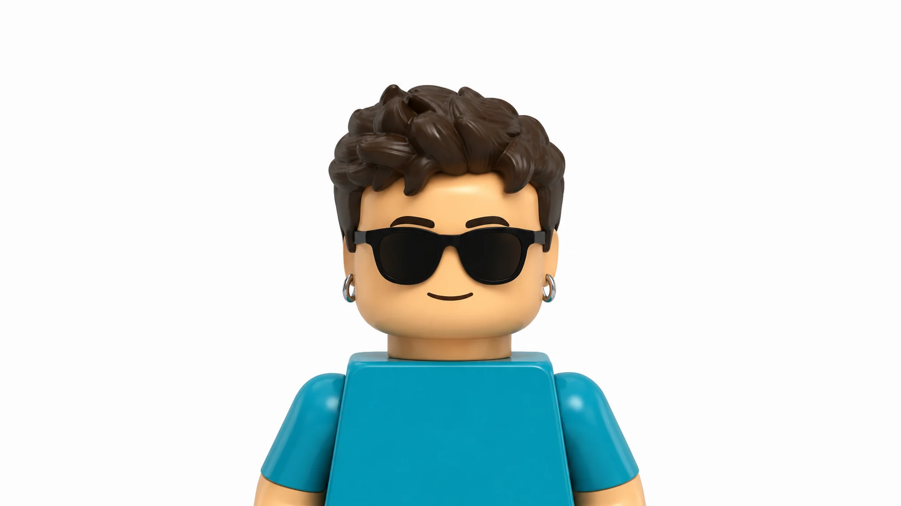

Digital Solution Lead
Sunoikeo di Lena Ferrari · Castelfranco Emilia (MO)
- Implementation and optimisation of IT and technology solutions for the company
- Website development and management (ongoing)

Mathematician with a Master’s degree in Mathematics (Data Science), awarded with honors, and training in Computer Graphics, differential geometry, numerical methods, and machine learning. Combines a quantitative background with experience in digital development, technical analysis, and project coordination.
Sunoikeo di Lena Ferrari · Castelfranco Emilia (MO)
Law Firm of Lara Ferrari · Modena
Sunoikeo di Lena Ferrari · Castelfranco Emilia (MO)
University of Modena and Reggio Emilia
Thesis: On smooth atlases over triangle meshesSupervisors: Prof. Fabio Pellacini and Prof. Claudio Mancinelli
Read my MSc thesisUniversity of Modena and Reggio Emilia
Thesis: Sulla disuguaglianza isoperimetricaSupervisor: Prof. Carlo Mercuri
Read my BSc thesis